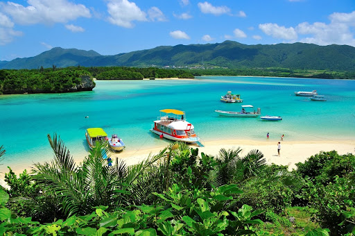
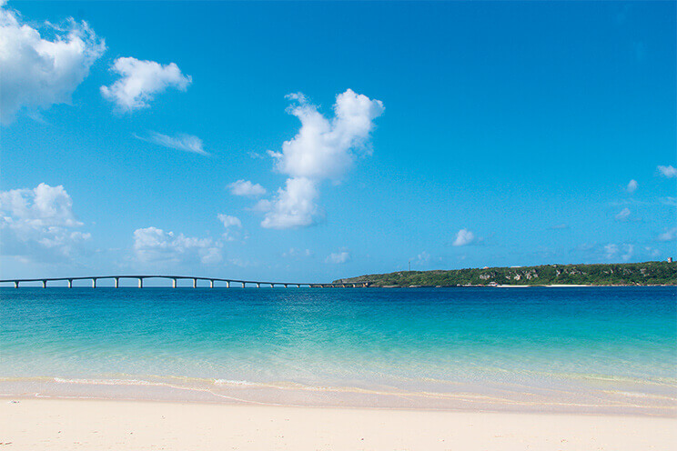

Foto del hotel Yuinchi fuente
jalan.net
Nanjo es conocida como la "ciudad del corazón" debido a su forma
única. La ciudad de Nanjo ofrece una amplia variedad de lugares de
interés, como Okinawa World, Gyokusendo (cueva de piedra caliza) y
Azama Sun-Sun Beach, por nombrar algunos. Además, Hyakuna Gran,
Yuinchi Hotel Nanjo y más opciones de alojamiento están disponibles.
Ubicada frente a la costa de Nanjo City se encuentra la isla Komaka,
una isla pequeña y deshabitada rodeada de hermosa arena blanca y con
una circunferencia de 800 metros. Puede tomar un ferry a Komaka y
también a la isla de Kudaka desde el centro de ocio Chinen Ocean,
ubicado justo al lado de la playa de Azama Suunsun.
Isla Ishigaki

Foto de la Isla Ishigaki fuente
greenubuntu.com
Ishigaki ofrece varias playas agradables, esnórquel y buceo en los
arrecifes de coral. El esnórquel se puede disfrutar en casi todas las
playas de la isla, mientras que el buceo se ofrece a través de las
numerosas tiendas de buceo con recorridos disponibles. Si bucea,
asegúrese de ver las famosas mantarrayas de la isla, que se congregan
en grandes cantidades alrededor de Manta Scramble, cerca de la bahía
de Kabira.
Además de hacer esnórquel y buceo a lo largo de las playas y los
arrecifes de coral de la isla, el interior de Ishigaki tiene bosques
de palmeras, ríos bordeados de manglares y montañas cubiertas de
jungla que ofrecen oportunidad de campamentos.
Isla Miyako

Foto de Yohana Maehama fuente
visitokinawa.jp
La isla Miyako es una isla relativamente plana formada por un arrecife
de coral elevado. En la isla no existen ríos, y debido a que el suelo
no desemboca en el mar, es muy conocida por tener numerosas playas de
excepcional belleza. Según las clasificaciones compiladas por los
medios de viajes, varias playas de la isla Miyako se encuentran entre
las mejores playas de Japón. Además, hay una amplia gama de opciones
gastronómicas gourmet, desde los mangos, que son populares en todo
Japón, hasta la apreciada carne de res Miyako, a la que a veces se
hace referencia como la carne fantasma.